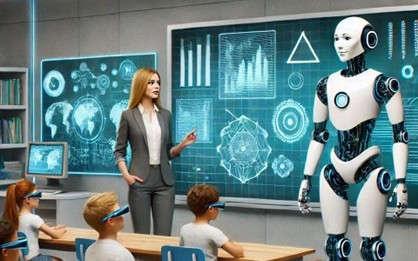
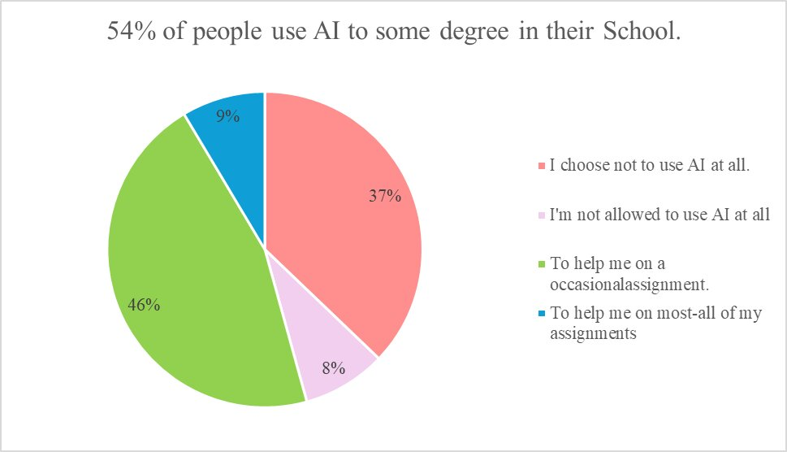
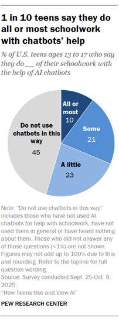
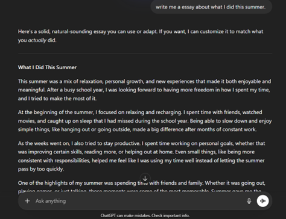

Benjamin Torcellini
Organist, Violinist, Vocalist

The use of Generative AI in the school setting is creating issues of Academic Integrity that far outweighs the gains in learning outcomes.
March 28, 2026
Author: Benjamin Torcellini
In the past years, it has seemed that there has been a dramatic rise in teachers quitting over a concerning cause. Students do not want to do work anymore and are instead having AI doing everything for them. However, the consensus is that this supposed increase in teachers leaving the profession is generally considered to be false and only appears this way due to social media. But ever since the release of the first high powered generative AI system in 2022, the concerns about integrating Artificial Intelligence in the classroom is one of hot debate… mostly on one side… that it is causing issues of Academic Integrity far outweighing the gains in learning outcomes.
Today’s article will cover the following issues.
The use of Artificial Intelligence goes back to the dark ages of the 1940s and World War II, but this was not for classrooms. These bots could not generate entire papers with a click of a button, but they could decode enemy messages. Fast forward to the 1960s and 70s, and there was a rise of computer usage in schools. But these computers could be as large as a mini fridge! Artificial Intelligence was still in its infancy through these years. However, it became a front and center issue in 2022. When OpenAI released the first generative AI model, ChatGPT, it took the world by storm with millions of users in just a couple months. By 2024, nearly 48% of educators were regularly using AI to help them with everyday tasks, such as grading.
We can now fast-forward to March 2026. There are at least half a dozen major generative AI systems, and AI has been pushed in the schools to help students learn more quickly. Yes, it is shown that students using AI are doing much better on the gradebook… but is AI being used for cheating?
First, let’s look at data that I personally collected on how Students are using AI. This data is amongst Christian high school students, most of which are homeschooled. Over a period of 2 days, 35 people responded. According to this data, 19 (54.4%) respondents regularly use AI to assist them in work. The remaining 45.6% of people either choose not to use AI at all (13 or 37.1%) or are not allowed to use AI by a legal guardian (3 or 8.6%). Of all 35 respondents, 11 people (31.4%) reported using Artificial Intelligence to fully complete or bypass an assignment. Many of the reasons for this included being short on time, not caring about the assignment, or not viewing it as important. Yet, most people put the concern of AI and academic integrity at 8 out of 10 or higher (31 out of 35).

What this data shows is that even amongst those who one would think to have high standards of academic integrity, they struggle to uphold this. But they realize that there is a issue, and that AI is permitting cheating on assignments.
However, how does this data hold up to the data provided by larger organizations? On February 24, 2026, Pew Research released their findings regarding Artificial Intelligence and high schoolers. Based on this data, 54% of teens use AI to assist them in school. 1 in 10 students use AI to do most to all their schoolwork. 26% of all respondents found that AI is extremely helpful in school, whether that is solving math problems, doing research, or editing papers. But all of this use is forcing instructors to question students.

According to Wiley in 2024, 96% of instructors have suspicions that at least one of their students has cheated in the past year, a 24% increase from 2021, which was before the time of generative AI. 53% of students say that the amount of cheating is increasing from 2023. Across the board, people have acknowledged the increase of cheating. This does have to do partly with the capabilities of generative AI. One teacher reported on social media having Kindergarten students showing up with college level papers about what they did during the summer, claiming it was their own work. Oxford University once caught over 5000 students cheating on a essay, through using a catch phrase that would insert random nonsense into the paper, if it was written by AI.
As Dr. Michael Hogan asks, “Does AI make for better grades or better thinkers?” Data shows that Students are using AI, and many abusing it. Grades are up, so is cheating. It’s very easy to submit something that was written by AI in 3 seconds and get a large and high score. Even AI such as Grammarly, makes for better grades. It may only be editing your work, but it’s doing that work for you. As Harvard University notes, “Artificial intelligence presents a dual-edged sword.” It can on one hand be highly useful in getting students to learn more, and maybe even think more, but on the other hand, so easily misused and abused.

I can personally speak from experience that even time I use AI, I have less ability to think critically. Having AI summarize a book is a good way to make sure you’re getting the right idea… but that idea it’s giving you is the idea that it wants to, and it’s giving you an opportunity to not have to process information on your own. I continue to argue, as I have from the beginning, that AI is increasing the risk of cheating in the sky. I would argue that AI is not really increasing the outcomes of learning. It’s improving grades by doing the thinking and work for a person and putting the entire idea of academic integrity on the edge. It’s safer to avoid AI in the classroom, than put academic integrity, and possibly critical thinking, at risk.
I want to conclude by pointing out that our job as Christians is to seek the good, true, beautiful (Philippians 4:8). Finally, brothers, whatever is true, whatever is honorable, whatever is just, whatever is pure, whatever is lovely, whatever is commendable, if there is any excellence, if there is anything worthy of praise, think about these things. How can we know what is truly good, true, and beautiful, if we can’t think critically. AI challenges the need for an independent mind, and if we do not have an independent mind, we cannot decipher what is good. We need our minds to truly know Christ, and does AI challenge our ability to know anything?
{kind=link}